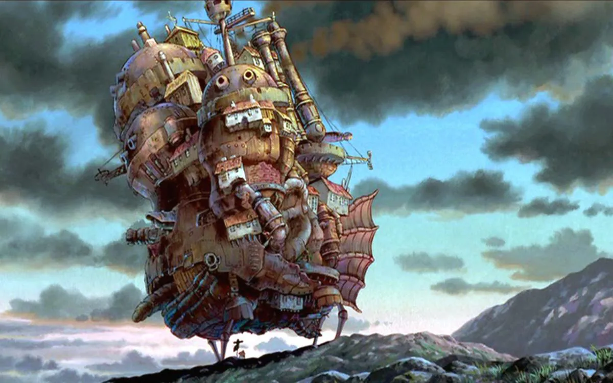

Another sigue la historia de Koichi Sakakibara, un chico que se traslada al instituto Yomiyama North. Allí conoce a Mei Misaki, una estudiante aparentemente tranquila y tímida a la que muchos de sus compañeros de clase e incluso la maestra ignora.

Sophie, una joven de 18 años, trabaja sin descanso en la tienda de sombreros de su difunto padre. En uno de sus poco frecuentes paseos por la ciudad, Sophie conoce al mago Howl, un joven con poderes extraordinarios y extremadamente seductor.
Fecha de estreno: 20 de noviembre de 2004 (Japón)
Director: Hayao Miyazaki
Adaptaciones de: El castillo ambulante
Música: Joe Hisaishi
Año: 2004
Reparto
Christian Bale (Howl)
Billy Crystal (Calcifer)
Jean Simmons (Grandma Sophie)
Lauren Bacall (Bruja del Páramo)